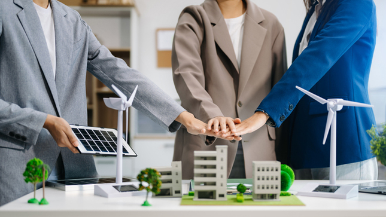

Fin de la pobreza üè†
El primer ODS busca erradicar la pobreza en todas sus formas y en todo el mundo para 2030. La pobreza no solo se refiere a la falta de ingresos, sino también a la carencia de acceso a servicios básicos como la educación, la salud y la vivienda. Para lograrlo, es fundamental fortalecer los sistemas de protección social, crear empleos dignos y garantizar que las personas más vulnerables tengan acceso a recursos económicos y oportunidades. Propuestas actuales incluyen programas de transferencias monetarias condicionadas, como los implementados en Brasil y México, que ayudan a familias en situación de pobreza a cubrir sus necesidades básicas. Además, se promueve la inclusión financiera mediante el acceso a cuentas bancarias y microcréditos, especialmente en zonas rurales y marginadas.

Hambre cero üçΩÔ∏è
Este objetivo busca acabar con el hambre, lograr la seguridad alimentaria, mejorar la nutrición y promover la agricultura sostenible. A pesar de los avances, millones de personas aún sufren de desnutrición. Para alcanzar este objetivo, es esencial invertir en agricultura sostenible, reducir el desperdicio de alimentos y mejorar la distribución de recursos. Iniciativas como los huertos urbanos, que permiten a las comunidades cultivar sus propios alimentos, y la promoción de dietas sostenibles, que reducen el impacto ambiental de la producción de alimentos, son ejemplos de acciones en marcha. Además, organizaciones como el Programa Mundial de Alimentos trabajan para proporcionar asistencia alimentaria en zonas de conflicto y desastres naturales..

Salud y bienestar ❤️
El tercer ODS tiene como objetivo garantizar una vida sana y promover el bienestar para todas las edades. Esto implica mejorar el acceso a servicios de salud de calidad, vacunas y medicamentos esenciales, así como combatir enfermedades como el VIH, la malaria y la tuberculosis. La pandemia de COVID-19 ha destacado la importancia de contar con sistemas de salud robustos y accesibles. Campañas de vacunación global, como las impulsadas por Gavi, la Alianza para las Vacunas, y la expansión de la telemedicina, que permite a las personas recibir atención médica a distancia, son propuestas destacadas. Además, se promueve la educación en salud para prevenir enfermedades y fomentar estilos de vida saludables.
Educaci√≥n y calidad üìö
Este objetivo busca asegurar una educación inclusiva, equitativa y de calidad para todos. La educación es fundamental para romper el ciclo de la pobreza y promover el desarrollo sostenible. Para lograrlo, es necesario invertir en infraestructura escolar, formar y capacitar a docentes, y reducir las brechas de género y económicas en el acceso a la educación. Programas como "Educación para Todos" y el uso de plataformas digitales, como Khan Academy y Coursera, están ayudando a democratizar el acceso al conocimiento. Además, se promueve la educación en habilidades técnicas y digitales para preparar a los estudiantes para los empleos del futuro.
Igualdad de género ⚖️
El quinto ODS busca lograr la igualdad entre hombres y mujeres, empoderando a mujeres y niñas en todos los ámbitos de la vida. Esto implica eliminar la violencia de género, garantizar igualdad de oportunidades laborales y promover la participación política de las mujeres. A pesar de los avances, las mujeres aún enfrentan discriminación y barreras en muchas áreas. Campañas como #HeForShe, impulsada por ONU Mujeres, y leyes de paridad salarial son ejemplos de iniciativas que buscan cerrar la brecha de género. Además, se promueve la educación en igualdad de género desde una edad temprana para cambiar normas sociales y culturales.

Agua limpia y saneamiento üö∞
Este objetivo tiene como meta garantizar el acceso universal al agua potable y al saneamiento. El agua es un recurso esencial para la vida, pero millones de personas aún carecen de acceso a agua limpia y servicios de saneamiento adecuados. Para lograrlo, es necesario invertir en infraestructura hídrica, proteger los ecosistemas acuáticos y promover el uso eficiente del agua. Iniciativas como la desalinización del agua de mar y la reutilización de aguas residuales son propuestas innovadoras que están ganando terreno. Además, organizaciones como WaterAid trabajan para llevar agua potable y saneamiento a comunidades rurales y marginadas.

Energía asequible y no contaminante ⚡
El séptimo ODS busca asegurar el acceso a energía limpia, asequible y sostenible para todos. La energía es fundamental para el desarrollo económico y social, pero su producción y consumo tienen un impacto significativo en el medio ambiente. Para lograrlo, es clave aumentar el uso de energías renovables, como la solar y la eólica, y mejorar la eficiencia energética. Proyectos de electrificación rural, como los implementados en India y África, están llevando energía a comunidades que antes carecían de acceso. Además, los subsidios para paneles solares y la promoción de vehículos eléctricos son ejemplos de acciones que están ayudando a reducir la dependencia de los combustibles fósiles.
Trabajo decente y crecimiento econ√≥mico üíº
Este objetivo busca promover el empleo digno y el crecimiento económico sostenible. El trabajo decente no solo proporciona ingresos, sino también dignidad y seguridad. Para lograrlo, es necesario fomentar la creación de empleos, apoyar a las pequeñas y medianas empresas, y garantizar derechos laborales. Programas de capacitación laboral, como los impulsados por la Organización Internacional del Trabajo (OIT), están ayudando a preparar a las personas para los empleos del futuro. Además, se promueve la economía circular, que busca reducir el desperdicio y maximizar el uso de los recursos.
Industria, innovaci√≥n e infraestructura üè≠
El noveno ODS tiene como objetivo construir infraestructuras resilientes, promover la industrialización sostenible y fomentar la innovación. La infraestructura es fundamental para el desarrollo económico y social, pero también tiene un impacto significativo en el medio ambiente. Para lograrlo, es clave invertir en transporte público sostenible, energías limpias y tecnología digital. Las ciudades inteligentes, que utilizan tecnología para mejorar la eficiencia y la calidad de vida, y los parques tecnológicos, que fomentan la innovación y el emprendimiento, son ejemplos de iniciativas en marcha. Además, se promueve la colaboración entre el sector público y privado para financiar proyectos de infraestructura sostenible.
Reducci√≥n de las desigualdades üåç
Este objetivo busca reducir la desigualdad dentro y entre países. La desigualdad no solo es una cuestión de ingresos, sino también de acceso a oportunidades y servicios básicos. Para lograrlo, es necesario implementar políticas fiscales justas, promover la inclusión social y proteger a los migrantes y refugiados. Propuestas como el impuesto a las grandes fortunas y los programas de integración social, que buscan reducir la brecha entre ricos y pobres, son relevantes. Además, se promueve la cooperación internacional para abordar las desigualdades globales, como la brecha entre países desarrollados y en desarrollo.
Ciudades y comunidades sostenibles üèôÔ∏è
El undécimo ODS busca lograr que las ciudades sean inclusivas, seguras, resilientes y sostenibles. Las ciudades son centros de innovación y crecimiento económico, pero también enfrentan desafíos como la contaminación, la congestión y la falta de vivienda asequible. Para lograrlo, es clave mejorar el transporte público, garantizar viviendas asequibles y reducir la contaminación. Iniciativas como los edificios ecoeficientes, que reducen el consumo de energía y agua, y los planes de movilidad urbana, que promueven el uso de transporte público y no motorizado, son ejemplos de acciones en marcha. Además, se promueve la participación ciudadana en la planificación urbana para garantizar que las ciudades sean inclusivas y equitativas.

Producci√≥n y consumo responsables üîÑ
Este objetivo busca promover el uso eficiente de los recursos y reducir el desperdicio. El consumo y la producción sostenibles son fundamentales para reducir el impacto ambiental y garantizar que los recursos estén disponibles para las generaciones futuras. Para lograrlo, es clave fomentar la economía circular, que busca reducir, reutilizar y reciclar materiales, y reducir el uso de plásticos de un solo uso. Campañas como "Zero Waste", que promueven un estilo de vida sin desperdicios, y el etiquetado ecológico, que informa a los consumidores sobre el impacto ambiental de los productos, son ejemplos de iniciativas en marcha. Además, se promueve la educación en consumo responsable para cambiar hábitos y comportamientos.
Acci√≥n por el clima üå±
El decimotercer ODS busca combatir el cambio climático y sus efectos. El cambio climático es una de las mayores amenazas para la humanidad, con impactos como el aumento de las temperaturas, el derretimiento de los glaciares y el aumento del nivel del mar. Para lograrlo, es necesario reducir las emisiones de gases de efecto invernadero, promover energías limpias y adaptarse a los impactos climáticos. Acuerdos internacionales como el Acuerdo de París y el Pacto Verde Europeo son ejemplos de esfuerzos globales para abordar el cambio climático. Además, se promueve la educación en cambio climático para aumentar la conciencia y la acción individual y colectiva.

Vida submarina üê†
Este objetivo busca conservar y utilizar sosteniblemente los océanos y los recursos marinos. Los océanos son fundamentales para la vida en la Tierra, ya que regulan el clima, proporcionan alimentos y son hábitats para una gran diversidad de especies. Sin embargo, enfrentan amenazas como la contaminación plástica, la sobrepesca y la acidificación. Para lograrlo, es clave reducir la contaminación plástica, proteger los ecosistemas marinos y regular la pesca. Iniciativas como las áreas marinas protegidas, que restringen actividades humanas en zonas sensibles, y las campañas de limpieza de playas, que involucran a comunidades locales, son ejemplos de acciones en marcha. Además, se promueve la investigación científica para entender y proteger los océanos.

Ecosistema Terrestre üå≥
El decimoquinto ODS busca proteger los ecosistemas terrestres, combatir la desertificación y detener la pérdida de biodiversidad. Los ecosistemas terrestres, como los bosques y los humedales, son fundamentales para la vida en la Tierra, ya que proporcionan alimentos, agua y hábitats para especies. Sin embargo, enfrentan amenazas como la deforestación, la degradación del suelo y la pérdida de biodiversidad. Para lograrlo, es necesario reforestar, proteger especies en peligro y promover prácticas agrícolas sostenibles. Proyectos como la Gran Muralla Verde en África, que busca restaurar tierras degradadas, y la protección de áreas naturales, como parques nacionales y reservas, son ejemplos de iniciativas en marcha. Además, se promueve la educación en conservación para aumentar la conciencia sobre la importancia de los ecosistemas terrestres.

Paz, justicia e instituciones s√≥lidasüïäÔ∏è
Este objetivo busca promover sociedades pacíficas e inclusivas, con instituciones transparentes y justas. La paz y la justicia son fundamentales para el desarrollo sostenible, ya que permiten a las personas vivir sin miedo y acceder a oportunidades. Para lograrlo, es clave combatir la corrupción, garantizar el acceso a la justicia y reducir la violencia. Iniciativas como los gobiernos abiertos, que promueven la transparencia y la rendición de cuentas, y la justicia restaurativa, que busca reparar el daño causado por el crimen, son ejemplos de acciones en marcha. Además, se promueve la educación en derechos humanos y resolución de conflictos para fomentar una cultura de paz.
Alianzas para lograr los objetivosü§ù
El último ODS busca fortalecer las alianzas globales para alcanzar los demás objetivos. La cooperación internacional es fundamental para abordar desafíos globales como el cambio climático, la pobreza y la desigualdad. Para lograrlo, es clave fomentar la colaboración entre gobiernos, empresas, organizaciones no gubernamentales y ciudadanos. Plataformas como la Agenda 2030 y los fondos multilaterales, que financian proyectos de desarrollo sostenible, son ejemplos de esfuerzos globales. Además, se promueve el intercambio de tecnología y conocimientos para acelerar el progreso hacia los ODS.